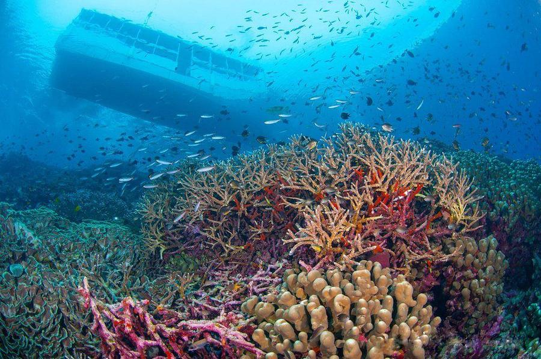
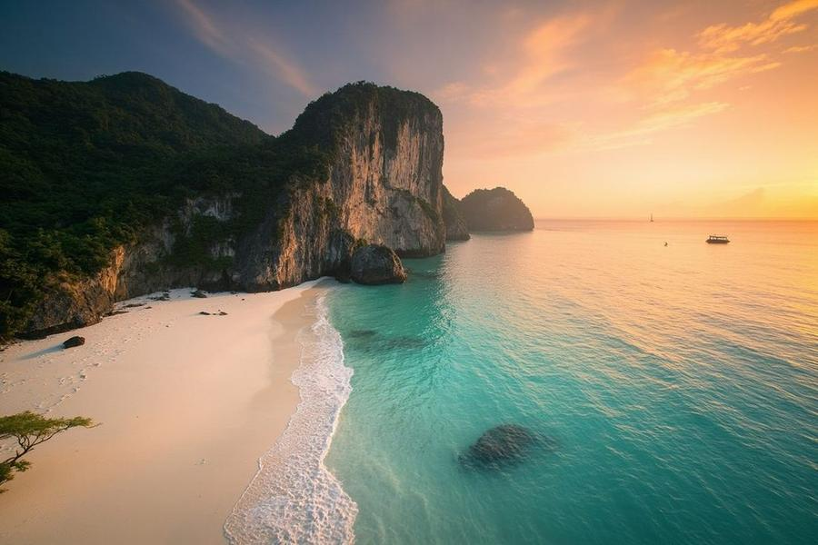
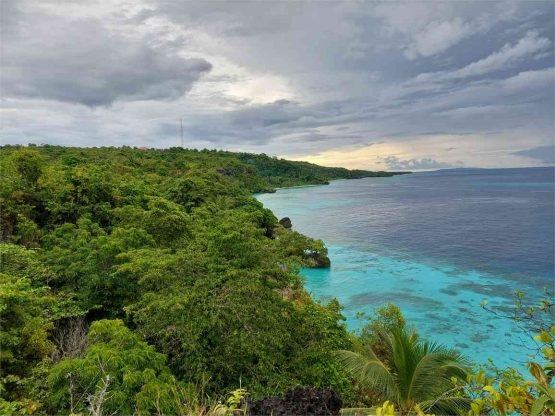

Tentang Tomia
Tomia adalah surga bagi para penyelam dan pencinta laut. Pulau ini memiliki lebih dari 20 titik penyelaman kelas dunia yang diakui oleh komunitas diving internasional. Terumbu karang di sini termasuk yang paling utuh dan beragam di dunia.
Dengan visibilitas air hingga 50 meter dan arus yang menantang, Tomia menawarkan pengalaman menyelam yang tak terlupakan.
Spot Diving & Snorkeling

Pulau Onemobaa: Identitas dan Resort Selam Kelas Dunia
Pulau Onemobaa, yang juga dikenal dengan nama lokal Pulau Tolandona, adalah pulau kecil yang terletak di dekat Pulau Tomia, salah satu dari empat pulau utama di Wakatobi. Pulau ini menjadi sangat terkenal di kalangan penyelam internasional karena merupakan lokasi utama dari Wakatobi Dive Resort, sebuah resor mewah yang diakui secara global sebagai destinasi selam dan snorkeling premium. Akses ke pulau ini sering melalui penerbangan charter pribadi langsung dari Bali yang dikelola oleh resor, menjamin kondisi perairan yang sangat terawat dan eksklusif.

Puncak Tomia
Puncak Tomia adalah salah satu destinasi wisata darat yang paling terkenal di Pulau Tomia, Wakatobi. Lokasinya berada di dataran tinggi Desa Kahianga, Kecamatan Tomia Timur. Berbeda dengan citra Wakatobi yang didominasi keindahan bawah laut, bukit ini memberikan pengalaman yang berbeda, yaitu menikmati keseluruhan panorama kepulauan dari ketinggian.

Tadu Sangia
Pemandangan Unik: Tadu Sangia terkenal karena memiliki formasi tebing-tebing batu karang (karst) yang menjulang di tepi laut. Kontras antara batu karang yang kokoh, vegetasi hijau, dan birunya air laut menciptakan pemandangan yang dramatis dan menarik.
Spot Panjat Tebing: Kawasan Tadu Sangia, khususnya bagian "Fatu Kolo" atau "Fatu Nomo," menjadi satu-satunya spot resmi untuk panjat tebing di Pulau Tomia. Hal ini menarik para petualang yang ingin menikmati tantangan fisik sambil disuguhi pemandangan laut Wakatobi dari ketinggian.
Aktivitas Petualangan: Selain panjat tebing, kawasan ini juga cocok untuk berkemah di area sekitar tebing dan pantai, memberikan pengalaman staycation alam yang unik.

Pantai Lakota
Pantai Lakota adalah destinasi wisata pantai paling populer di Pulau Tomia, Wakatobi, yang terletak di sisi barat pulau, menjadikannya lokasi utama dan terbaik untuk menikmati pemandangan matahari terbenam (sunset) yang memukau. Keindahan alamnya berasal dari kombinasi pesisir pantai dengan tebing karang landai yang menyediakan sudut pandang tinggi untuk menyaksikan cakrawala laut yang luas, menciptakan suasana yang romantis dan tenang di golden hour.
Selain menyuguhkan panorama alam yang spektakuler, pantai ini juga mudah dijangkau dan didukung oleh fasilitas sederhana seperti warung makan dan akomodasi di sekitarnya, menjadikannya tempat ideal bagi wisatawan yang mencari pengalaman bersantai di daratan Tomia, sebagai penyeimbang sempurna dari aktivitas selam dan snorkeling Wakatobi.

Gua Te'e Wali
Gua Te'e Wali memiliki bentuk mulut yang cukup luas dengan diameter sekitar 6 meter dan cenderung berbentuk semi-vertikal. Jalan masuknya menuju dasar gua dikelilingi oleh pepohonan yang rimbun, menciptakan suasana yang sejuk dan asri di sekitar mulut gua. Suasananya yang tenang dan airnya yang bening menjadikan tempat ini sebagai lokasi yang sempurna untuk menikmati pagi hari atau bersantai, jauh dari hiruk pikuk.
Secara keseluruhan, Te'e Wali merupakan bukti kekayaan geologi Pulau Tomia dan menjadi salah satu destinasi wisata darat yang memukau, menawarkan misteri alam berupa air tawar di tepi laut, yang sangat berharga bagi masyarakat kepulauan.

Pantai Ampombero
Ampombero adalah salah satu destinasi ikonik di Pulau Tomia, Wakatobi, yang terletak di wilayah Desa Kulati, Tomia Timur. Lokasi ini dikenal karena keberadaan tebing-tebing tinggi yang menghadap langsung ke lautan luas, menawarkan panorama Samudra Pasifik yang spektakuler, menjadikannya spot favorit untuk fotografi, terutama saat matahari terbit dan terbenam.
Keunikan utama Ampombero terletak pada namanya yang berarti "melambaikan tangan" dalam bahasa lokal. Tebing ini dulunya adalah titik krusial di mana masyarakat lokal berkumpul untuk mengantar dan mengucapkan selamat tinggal kepada sanak keluarga yang berlayar jauh, menjadikannya simbol kesetiaan, kerinduan, dan harapan akan kepulangan yang selamat di tengah kehidupan bahari yang dinamis.